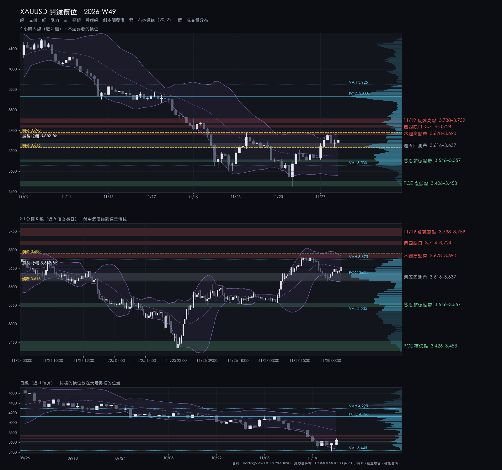
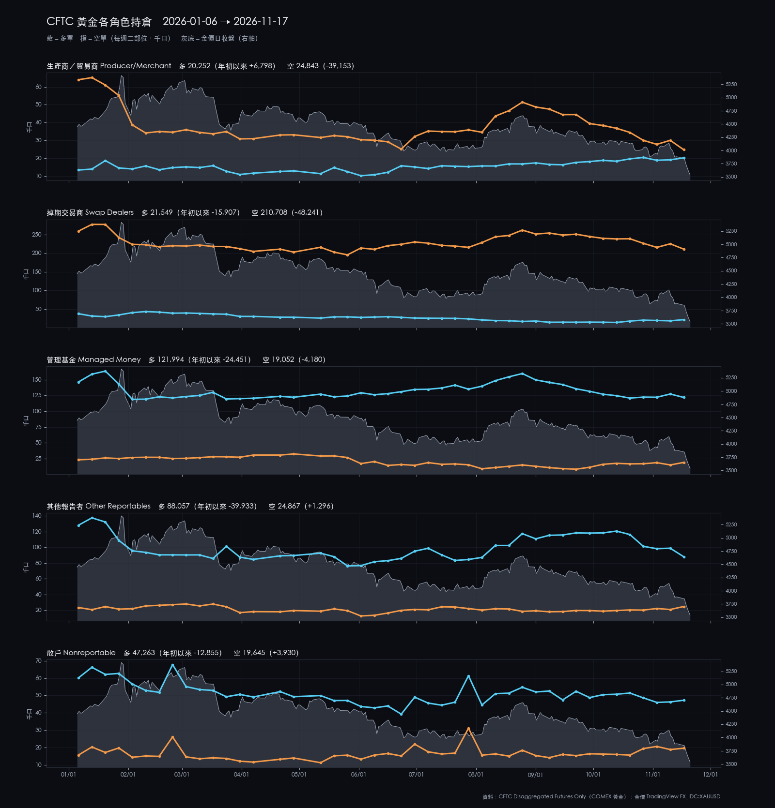
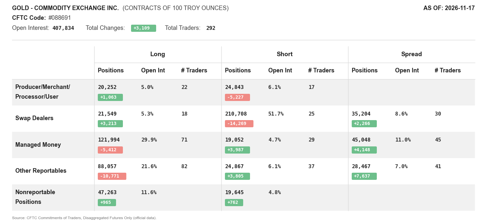

2026-W49 · Sun · 信心 medium 單一來源
XAUUSD 2026-W49 週報
PCE 當晚金價探 3426、2025 年 8 月底以來最低，隨即收回；週五漲到 3685，週收 3653.55，對上週收 +3.3%。
本週建議 觀望：S1 暫停；等 4h 收出 3616–3690，週四 22:00 前全平
資料截止：2026-11-27T19:30:00+00:00
關鍵價位

| 3,737.83–3,758.65 | 阻力 | 11/19 反彈高點 | 突破後的第二目標 |
|---|---|---|---|
| 3,713.58–3,724.30 | 阻力 | 週四缺口 | 突破本週高點後的第一目標 |
| 3,678.28–3,689.67 | 阻力 | 本週高點帶 | 到這裡不追多；4h 收上 3689.67 才算突破 |
| 3,615.85–3,636.95 | 樞紐 | 週五回測帶 | 4h 收破 3615.85 轉向下跌劇本；守住則先看上方 |
| 3,546.10–3,557.36 | 支撐 | 感恩節低點帶 | 跌破決策帶後的第一目標；到這裡不追空 |
| 3,426.32–3,453.20 | 支撐 | PCE 夜低點 | 跌破 3546.10 後的第二目標 |
劇本
| 偏多 | 35% | 4h 收上 3690，看 3714–3724，再看 3738–3759 | 3,689.67 |
|---|---|---|---|
| 偏空 | 35% | 4h 收破 3616，看 3546–3557，再看 3426–3453 | 3,615.85 |
| 整理 | 30% | 在 3616–3690 之間整理，等週五非農 | — |
本週看什麼
- 3616–3637 週五回測帶：4h 收盤守不守得住
- 3678–3690 本週高點帶：4h 能否收上
- 週五 21:30 非農；週四 22:00 前全部平倉
S1／S2
| S1 V3.9 | wait | —：前測累計 −3.84%，仍在暫停，頻道主檢視前不推薦 |
|---|---|---|
| S2 V3.2 | conditional | B：3616–3637 是候選區，日線仍逆勢，週四 22:00 前全平 |
事件
| 2026-11-30 13:00 | Fed 行事曆：本週沒有主席演說、座談或作證；唯一的理事公開行程是 Bowman 作證（另列） | Fed 官方行事曆；有投票權的地區聯儲官方頁面也沒有列出主席談話。時間欄只作排序用。 |
|---|---|---|
| 2026-12-01 04:30 | CFTC 持倉報告延後公布（11/24 那期） | CFTC 發布時程（美東 11/30 15:30）。只作背景。 |
| 2026-12-01 23:00 | Fed 副主席（監理）Bowman 眾議院作證 | Fed 行事曆（美東 10:00）。題目是金融監理；前後 30 分鐘不新進場（執行者建議）。 |
| 2026-12-01 23:00 | 美國 10 月 JOLTS 職缺；營建支出 | BLS、Census 行事曆（美東 10:00）。前後 30 分鐘不新進場（執行者建議）。 |
| 2026-12-03 22:00 | 非農前一晚強制平倉期限 | 週四 22:00 前全部平倉（規則）；之後到週末不新進場（執行者建議）。 |
| 2026-12-03 23:00 | 美國 10 月工廠訂單完整報告 | Census 行事曆（美東 10:00）。次級數據，屆時應已無部位。 |
| 2026-12-04 21:30 | 美國 11 月非農就業報告（Employment Situation） | BLS 行事曆（美東 8:30）。前一晚 22:00 已全部平倉。 |
| 2026-12-05 04:00 | 週末全平 | 週六 04:00 前全部平倉，不留倉過週末。 |
| 2026-12-05 04:30 | CFTC 持倉報告（12/1 那期） | CFTC 發布時程（美東 12/4 15:30）。只作背景。 |
上週回顧
- 反彈劇本週一 11:00 收 3621.32 觸發，兩目標都到；週二 23:00 收 3554.87 失效
- 下跌劇本週三 19:00 收 3471.66 觸發、跌到 3426.32；下一根收回 3537.60 而失效
- 整理劇本週一 11:00 就失效；三個劇本一週內都分出結果
| 2026-W45 | 3,874.3 | 4,146.99 | 3,874.3 | 4,069.63 | +5.04% |
|---|---|---|---|---|---|
| 2026-W46 | 4,069.99 | 4,148.6 | 3,852.62 | 3,883.94 | -4.57% |
| 2026-W47 | 3,879.4 | 3,901.23 | 3,502.93 | 3,537.83 | -8.80% |
| 2026-W48 | 3,537.83 | 3,689.67 | 3,426.72 | 3,583.104 | +1.28% |
市場消息
情緒 風險偏好回升：美股週漲約 5.6%、台股 9%（下表收盤只到 11/24）
- 10 月核心 PCE 3.3%、Q3 GDP 上修到 4.3%；12 月升 1 碼幾乎完全反映
- 金價 PCE 後探 3,426、15 個月低點後收回，三週來首次週漲
- 外資一週賣超台股約 2,818 億元，加權指數仍週漲 9.09%
展開看消息整理：上週 8 則、一週變化、近 3 個月、近半年主線
上週消息（2026-11-21～2026-11-27）
| 11-23 | 美股／AI | Nvidia 董事會讓黃仁勳回任執行長，股價收漲逾 31%；S&P 500 +4.74%、Nasdaq +6.51%。 未確認 | Investrade：S&P 500 為 2025 年 4 月以來最大單日漲幅；半導體 ETF 約 +14% | Investrade |
|---|---|---|---|---|
| 11-24 | 黃金 | 12 月期金跌 2.45% 收 3,561.90、白銀跌 5.54% 收 40.78，回吐前一天大半漲幅。 未確認 | Investrade：殖利率與美元偏軟下，金價隔夜恢復下跌 | Investrade |
| 11-25 | Fed／總經 | 10 月 PCE 年增 3.8%、核心 3.3%（月增皆 0.3%）；第三季 GDP 二估上修到年化 4.3%。 | CNBC 稱核心高於預期 3.2%，市場已完全反映 12/8–9 升 1 碼 | BEA、BEA、CNBC |
| 11-25 | 黃金 | 現貨金 PCE 公布後急跌到約 3,426，15 個月低點，隨即收回；白銀低點約 38.2。 未確認 | 報導說法：通膨數據推升升息預期；低點各家記 3,426–3,455 不一 | Longbridge／華爾街見聞、BullionVault |
| 11-25 | 台股／台幣 | 加權指數跌 1,926.92 點（−4.80%）收 38,195.43；外資單日賣超 1,236.55 億元。 | 投信買超 550.35 億元（證交所；經濟日報記 535.3 億） | 臺灣證券交易所（市場成交資訊）、臺灣證券交易所（三大法人 11/25） |
| 11-26 | 地緣／油價 | 胡塞稱襲擊沙烏地 Ras Tanura，伊朗稱兩艘油輪在荷姆茲附近觸雷；Brent 收 96.57。 | Brent 單日 +1.96 美元；說法出自交戰方，未獲獨立證實 | Reuters（Global Banking & Finance 轉載） |
| 11-27 | 美股／AI | 美股反彈：S&P 500 收 7,297.49、Nasdaq 收 24,129.50；S&P 一週漲約 5.6%。 | Reuters：逢低買進，12 月升息幾乎已完全反映 | Reuters（Globe and Mail 轉載）、La Nacion（通訊社稿） |
| 11-27 | 黃金 | 現貨金週五漲約 2.4% 收約 3,653，一週約 +3.3%，三週來首次週漲；白銀一週約 +6.3%。 未確認 | 報導說法：空頭回補；10 年期殖利率收 4.94%（財政部），週升 2bp | Longbridge／華爾街見聞、U.S. Treasury（每日殖利率） |
一週變化
| 黃金（COMEX 期貨） | 3,548.90 | +0.95% | 11-24 |
|---|---|---|---|
| S&P 500 | 7,201.09 | +4.21% | 11-24 |
| Nasdaq | 23,733.54 | +4.93% | 11-24 |
| 加權指數 | 36,811.89 | +2.16% | 11-23 |
| Brent 原油 | 88.41 | -4.49% | 11-24 |
| 美 10 年期殖利率 | 4.90 | -1 bp | 11-24 |
| 美元指數 | 103.85 | +0.04% | 11-24 |
| 美元／台幣 | 32.85 | -0.54% | 11-24 |
| VIX | 26.36 | -26.55% | 11-24 |
資料：Yahoo Finance 日收盤（yfinance）
近 3 個月
| 11-12 | 黃金 | 金價週二到週四連跌三天、創 52 週新低；報導歸因 CPI 後美元反彈與美債殖利率急升。 |
|---|---|---|
| 11-13 | 台股／台幣 | 台股一週漲 3,973 點（+10.01%）收 43,675.12；外資週賣超縮到 967.87 億元。 |
| 11-17 | 美股／AI | Nvidia 第三季營收 1,158 億美元、年增 103%，第四季指引 1,300 億美元（±3%）。 |
| 11-18 | Fed／總經 | 10 月 FOMC 紀要：幾乎所有與會者認為未來數月可能宜再升息；表決 10 比 2，兩票主張當場升 1 碼。 |
| 11-18 | 黃金 | 金價跌破 3,800，2025 年 9 月以來最低；報導歸因升息預期、美元 19 個月高與技術性賣壓。 |
| 11-20 | 美股／AI | 美股重挫：S&P 500 −3.7%、Nasdaq −5.4%，一週 −8.6%、−10.0%，進入修正。 |
| 11-20 | 黃金 | 現貨金再跌 2.4%、盤中低 3,502.93，一週跌約 8.9%，3 月以來最大；白銀期貨一週跌約 16%。 |
| 11-20 | 台股／台幣 | 台股一週跌 7,641.83 點（−17.50%）收 36,033.29；外資週賣超 2,186.69 億元。 |
近半年主線
| 伊朗衝突與油價 | 2026-02-28 | 胡塞與伊朗稱襲擊油設施與油輪（交戰方說法），Brent 一週約 +3% 收 95.44；OPEC+ 11/29 開會。 |
|---|---|---|
| Fed 重回升息與高殖利率 | 2026-06-17 | 10 月核心 PCE 3.3%、Q3 GDP 上修到 4.3%；12 月升 1 碼幾乎完全反映，10 年期 4.94%。 |
| AI 支出與回收疑慮 | 2026-06-05 | 週三 AI 股續跌、Nvidia 約 −4%；週五逢低反彈，S&P 500 一週約 +5.6%。 |
| 黃金從 1 月高點回落 | 2026-01-29 | 週三 PCE 後探 3,426、15 個月低點後收回，週五收約 3,653，三週來首次週漲。 |
| 外資賣台股、台幣走貶 | 2026-10-06 | 台股一週 +9.09% 收 39,308；外資仍週賣超約 2,818 億元，週三單日 1,237 億。 |
消息只是背景，不是進出場依據；「未確認」表示只找到評論或二手來源。
CFTC
本週沒有新一期：11/24 那期延到 12/1（二）04:30，12/1 那期 12/5（六）04:30；仍引 11/17 那期，大戶淨多 10.3 萬。
持倉反映的是建立它的那一週，不能預測下一週；看研究結論 →

CFTC 原始截圖（2026-11-17）

展開看策略績效：S1／S2 回測（資料到 2026-10-09）
| S1 V3.9 | 346 | 53.47% | +61.04% | 1.75 | 4.67% | 3.05 | +22.46%（黃金 -2.87%） |
|---|---|---|---|---|---|---|---|
| S2 V3.2 | 130 | 41.54% | +51.54% | 1.67 | 12.79% | 1.79 | +1.21%（黃金 -2.87%） |
| S1 V3.9 | +0.0% | -0.1% | -1.57% |
|---|---|---|---|
| S2 V3.2 | +2.0% | -5.0% | -1.0% |
| 黃金 | +10.06% | -6.45% | +0.8% |
TradingView 回測匯出（固定部位、不複利）；只在重新匯出時更新，不是訊號。 距上次匯出 50 天。完整績效頁 →
展開看細節：價位依據、劇本完整條件、市場摘要、證據限制
市場摘要
W48 收 3653.55，週開 3537.83，對前週收 +3.27%，收在週區間 3426.32–3689.67 由下往上 86.3% 處。週一 4h 收上上週的 3595.21，週一晚到 3689.67；週二晚跌回；週三台北 21:30 公布 10 月 PCE（核心年增 3.3%）後急跌，23:00 那根 30m 低 3426.32（日線 3426.72，2025-08-29 以來最低），三小時後收回到 3540；週五漲到 3685.30 後回測 3615.85，收 3653.55。三次到 3678–3690 都沒有 4h 收上。價格低於 4h EMA50 3658.27、1d EMA50 3982.84。DXY 週收 104.035，連五週收高。匯出的週線最後一根收 3583.104（是 11/25 日收，沒有含週五），下方四週表照匯出週線列出；以日線與 30m 的週五收盤計是 +3.27%。
價位依據
| 週五回測帶 | 3615.85–3636.95 | 實際成交價：週五 11/27 23:00 那根 4h 低 3615.85、19:00 那根低 3624.70（週五兩次回測的低點）；07:00 那根高 3636.95（週五起漲那根的最高）；11:00 那根低 3621.07。 帶寬 21.10 點，約 0.47 根 4h ATR（44.74，最近 14 根 4h 真實區間的簡單平均；以 ATR 衡量帶寬是執行者選定的描述方式，未經核准，下同）。週五 15:00 那根收 3679.32 之後，19:00、23:00 兩根回到帶內（低 3624.70、3615.85），收盤 3636.93、3641.32 都沒有收在帶下緣之下；週收 3653.55 在帶上緣上方 16.60 點。上週報告的壓力帶 3619.81–3636.73 幾乎與這一帶重疊（週一 19:00 那根收 3668.12，是第一根收在帶上方的 4h，之後轉為本週的回測區）。計算值 30m EMA50 3629.26 在帶內，30m EMA200 3610.34 在帶下緣之下 5.51 點，30m 布林下軌 3615.27 在帶下緣之下 0.58 點。帶下方是 4h 向上缺口 3568.43–3615.85 的未回補部分。 |
|---|---|---|
| 本週高點帶 | 3678.28–3689.67 | 實際成交價：週一 11/23 19:00 那根 4h 高 3689.67（本週最高，30m 在 22:00 那根）；週二 11/24 07:00 那根高 3678.28；週五 11/27 15:00 那根高 3685.30。 帶寬 11.39 點，約 0.25 根 4h ATR。本週三次漲到這一帶都沒有 4h 收上：三根收 3668.12、3640.53、3679.32；11/20 以來最高的 4h 收盤是 3679.32，在帶內。計算值 4h 布林上軌 3683.71、30m 布林上軌 3683.89 在帶內。上方緊接上週留下的 4h 向下缺口剩餘部分 3689.67–3702.40（缺口 3681.185–3702.40 回補到 3689.67）。週收在帶下緣之下 24.73 點。 |
| 感恩節低點帶 | 3546.10–3557.36 | 實際成交價：11/25 03:00 那根 4h 低 3546.10；11/24 23:00 那根低 3552.00；11/26 07:00 那根低 3550.79；11/26 15:00 那根低 3551.50；11/27 07:00 那根低 3557.36（週五起漲前的低點）。 帶寬 11.26 點，約 0.25 根 4h ATR。週二晚到週五早上，這一帶四次被測試；但 11/25 07:00 到 11/26 03:00 共六根 4h 的低點在 3546.10 之下，其中四根收在帶下緣之下（3515.85、3531.98、3471.66、3537.60），所以它不是沒有被跌破過的支撐。帶內有一個未回補的 4h 向上缺口 3550.06–3550.79，帶下方還有一個 3532.40–3534.80。計算值 4h 布林中軌 3581.00 在帶上緣上方 23.64 點。週收在帶上緣上方 96.19 點，約 2.15 根 4h ATR。 |
| 週四缺口 | 3713.58–3724.30 | 實際成交價：11/19 23:00 那根 4h 高 3713.58、11/19 15:00 那根低 3724.30，兩者之間是向下缺口（三根 4h 判定，逐根重算到最後一根 4h，11/28 03:00：沒有回補）；11/18 日線低 3720.00 在帶內。 帶寬 10.72 點，約 0.24 根 4h ATR。這是 11/19 會議紀要後下跌途中留下、到週收都沒有回補的缺口（回補＝缺口形成後 4h 最高價觸及的位置，判定方式由執行者選定）。帶下緣在本週最高 3689.67 上方 23.91 點、在週收上方 60.03 點（約 1.34 根 4h ATR）。 |
| 11/19 反彈高點 | 3737.83–3758.65 | 實際成交價：11/19 03:00 那根 4h 高 3737.83（含 10 月會議紀要公布的那根）；07:00 那根高 3758.65（11/19 日線最高）；11:00 那根高 3744.473；15:00 那根高 3742.555。 帶寬 20.82 點，約 0.47 根 4h ATR。這是 11/19 跌破之前最後一段反彈的高點群，這四根 4h 的高點都在帶內；之後 11/20 跌到 3502，W48 週一反彈到 3689.67，仍在帶下緣之下 48.16 點，11/25 再跌到 3426.32。帶下緣在週收上方 84.28 點，約 1.88 根 4h ATR。（判斷）距離較遠，列出是為了讓上漲劇本有第二個參考，不是預期會到。 |
| PCE 夜低點 | 3426.32–3453.20 | 實際成交價：11/25 23:00 那根 30m 低 3426.32（本週與 2026 年盤中最低；日線記 3426.72，相差 0.40 點，兩個都列出）；22:30 那根 30m 低 3453.20（PCE 公布後第一段急跌的低點）。 帶寬 26.88 點，約 0.60 根 4h ATR。這是 10 月 PCE（台北 11/25 21:30）公布後兩小時內的低點；11/25 23:00 那根 4h 由 3426.32 收回到 3537.60。日線低 3426.72 是 2025-08-29（日低 3404.41）以來最低。計算值 1d 布林下軌 3468.91 在帶上緣上方 15.71 點。帶上緣在週收下方 200.35 點，約 1.72 根 1d ATR（116.19）。（判斷）距離遠，列出是為了讓下跌劇本有第二個參考。 |
劇本完整條件
| 偏多 | 35% | 4h 收盤站上 3689.67（本週最高）。 | 觸發後 4h 收盤跌回 3678.28（本週高點帶下緣）之下。 | 第一目標 3713.58–3724.30（週四跳空缺口）；第二目標 3737.83–3758.65（11/19 反彈高點帶）。 |
|---|---|---|---|---|
| 偏空 | 35% | 4h 收盤跌破 3615.85（週五回測帶下緣）。 | 觸發後 4h 收盤站回 3636.95（週五回測帶上緣）之上。 | 第一目標 3546.10–3557.36（感恩節前後低點帶）；第二目標 3426.32–3453.20（PCE 夜低點帶）。 |
| 整理 | 30% | 價格在週五回測帶 3615.85–3636.95 與本週高點帶 3678.28–3689.67 之間往復，沒有 4h 收盤站上 3689.67，也沒有 4h 收盤跌破 3615.85。 | 4h 收盤站上 3689.67，或 4h 收盤跌破 3615.85。 | 區間內往復：上看 3678.28–3689.67 的反應，下看 3615.85–3636.95。 |
轉折條件
4h 收盤站上 3689.67，或 4h 收盤跌破 3615.85——任一發生即脫離整理區間，屆時以 live 結構重新評估。
S1／S2 完整條件
| S1 V3.9 | 暫停推薦：S1 V3.9 的預註冊前測（以策略訊號計）已達暫停門檻——已計 29 筆、累計 −3.84%，途中曾到 −4.00%（門檻 −3.67%）；檢視完成前不推薦 S1 進場。供參考的觸發位置：30m 收盤站上 30m 布林上軌並出現正式 V3.9 訊號（機制為歷來週報的摘述，以 TradingView 正式訊號為準）；目前上軌 3683.89，距最後收盤 3653.55 為 30.34 點，落在本週高點帶 3678.28–3689.67 內。等級 —。 | 固定停損：成交價下方 25 點；TP1 1R、TP2 3.5R。 | 固定口數與固定停損（細節見密碼頁）；同時只持一個部位。 |
|---|---|---|---|
| S2 V3.2 | 候選：價格回到週五回測帶 3615.85–3636.95 並出現正式 V3.2 訊號；帶上緣在週收 3653.55 下方 16.60 點。在 3625 附近成交，停損約 3600（帶下緣 3615.85 下方 15.85 點），TP1 約 3675、TP2 約 3725。成立的部分：週五兩次回測（低 3624.70、3615.85）都收回；30m ATR 14.93 低於固定停損 25 點。較弱的部分：日線仍在 1d EMA50 3982.84 之下，屬逆勢做多；週五非農，週四 22:00 前要全部平倉。條件式預評等級 B（執行者把量表延伸用於尚無訊號時，未經核准；在支撐區等訊號是執行者的用法）。 | 固定停損：成交價下方 25 點；TP1 2R、TP2 4R。 | 固定口數與固定停損（細節見密碼頁）；同時只持一個部位；S2 每週上限 2 次。 |
CFTC 完整數字
本週沒有新一期：11/24 那期因感恩節延到台北 12/1（二）04:30 公布，本圖仍是 2026-11-17（週二持倉）。本圖由官方 CFTC 資料以程式繪製（不是截圖）。可對照本圖核對：未平倉 407,834（+3,109）；Managed Money 多 121,994（−5,412）、空 19,052（+3,987）、價差 45,048（+4,148），淨多 102,942；Swap Dealers 空 210,708（−14,269）；Other Reportables 多 88,057（−10,771）；散戶（Nonreportable）淨多 27,618。以上僅作描述，不作方向訊號。Commitments of Traders 由 cftc.gov 免費公布，數據屬美國公有領域；本圖只含部位統計，不含任何帳戶、持倉或身分資訊。
證據限制
- 本期僅一份合格報告（另一 producer 暫停中），為單一來源；方向判斷沒有交叉檢驗。
- 本報告於 2026-11-28（週六）完稿，依 2026-11-28 起的規則以預測週 W49 編號；行情資料是 11/23–11/27 一週。本頁是 v2：同一模型在無建構記憶的情況下做固定提問覆核，不是獨立檢驗，範圍僅限契約遵循；修正 6 個缺陷與 9 處用字，價位、觸發價、機率與等級未變。
- 以 4h 收盤確認劇本的觸發與失效，是執行者選定的規則，未經核准。
- TradingView 匯出的黃金週線最後一根收 3583.104，等於 11/25 日收、沒有含週五；日線沒有 11/26（感恩節）那一根。週收以日線與 30m 的 3653.55 為準；1wk 的均線、布林與 RSI 以匯出週線計算。美元指數五個匯出檔各只有 988 根，比上週短。
- CFTC 本週沒有新一期：11/24 那期延到台北 12/1（二）04:30；仍引 11/17（週二）持倉，到週五收盤已落後 10 天。序列本週補進 11/10 那期，11/17 的淨部位變動因此改為一週變動。CFTC 部位與各角色年初至今圖僅作背景描述，不作方向訊號。
- 市場消息摘要以自己的文字寫成，「未確認」表示只找到評論或二手來源；新聞不作為價位、機率或進場條件。一週變化表的收盤只到 11/24（台股 11/23），是週中建立的快照；週五的數字見消息條目。
- 事件行事曆（Fed、BLS、BEA、Census、CFTC、NYSE、各地區聯儲）於 2026-11-28 查閱，未存頁面快照：已查閱、未存證。FOMC 靜默期日期取自費城與聖路易聯儲頁面，Fed 官方日曆回應 404。
- 價位圖的成交量分布以 COMEX 微型黃金期貨（MGC）成交量換算現貨價位，只作參考；過去研究顯示成交量無法區分 S1／S2 的勝負。
- 策略績效為 2026-10-09 匯出的回測，距今 50 天；只作背景，不是進場依據。
- GVZ、10 年期公債殖利率、通膨預期與 VIX 的 TradingView 資料自 2026-06-18 起未更新，本報告未使用。
- 來源比較共 10 組：3 組 similar、7 組 review；黃金週線的最新收盤差 195.6 bps（匯出週線未含週五），其餘最新收盤差都在 2.6 bps 以內。所有計算價一律採 TradingView 人工匯出。
研究證據，非投資建議。所有 Entry／SL 皆為條件式，實際執行前必須以 live TradingView 重新確認訊號與價格；最終決定屬於帳戶擁有者。